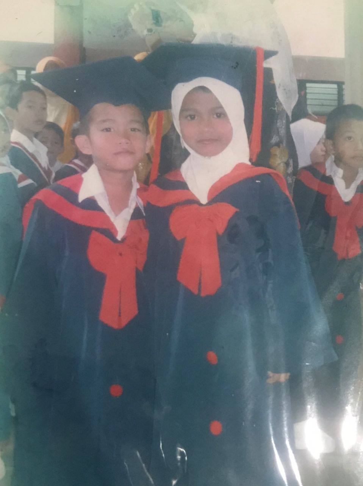
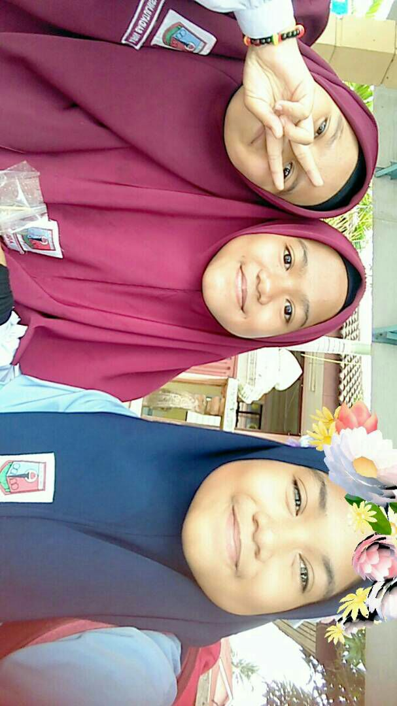
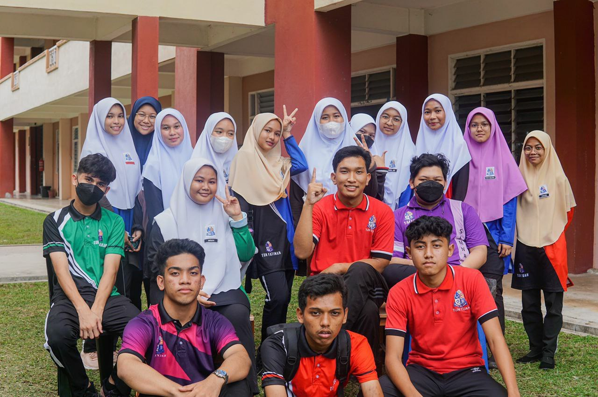
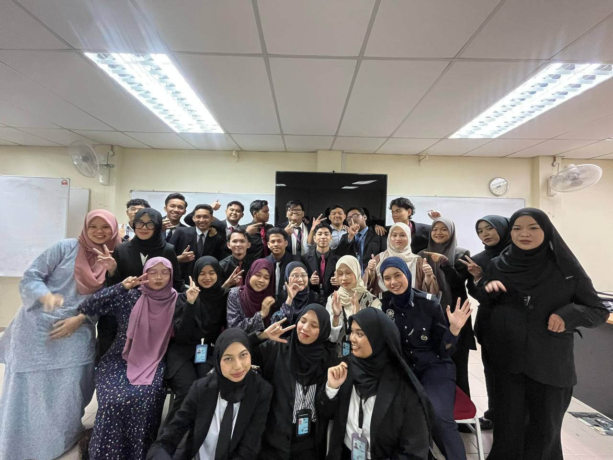

My Education

Pre-school
- 2010 - 1011
- Sekolah Kebangsaan Padang Luas
- Attended the same preschool as my twin brother
- Learned basic reading and writing

Primary School
- 2012 - 1017
- Sekolah Kebangsaan Pengkalan Nyireh
- Started socialising with friends

- 2018 - 1022
- Sekolah Menengah Kebangsaan Agama Nurul Ittifaq
- Sekolah Menengah Kebangsaan Nasiruddin Shah
- Best Experience in school era

- 2023- 2026
- Uitm Machang
- New environment
- Learn to survive